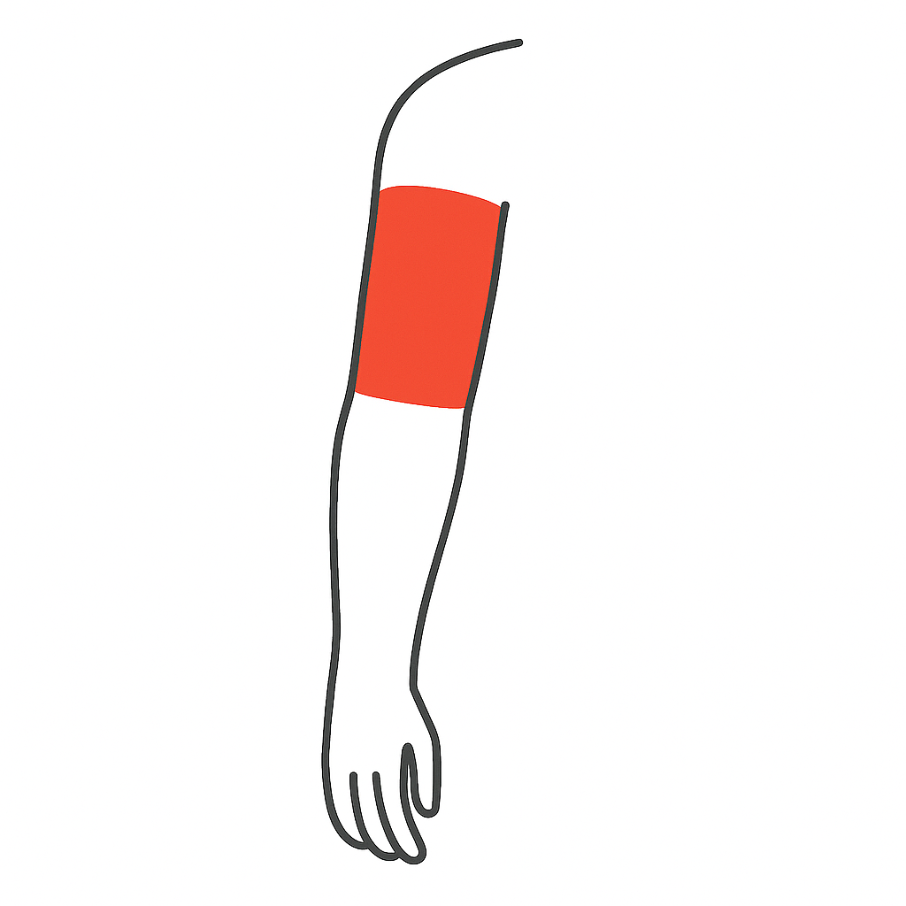

📋 머리/얼굴/목/어깨 통증 문진지
환자 정보를 입력하세요.
생년월일은 8자리 숫자로 입력해 주세요. (예:
19900101
)
1. 통증 부위가 어디인가요? (복수 선택 가능)
얼굴
목
어깨
팔 저림 포함
팔/손
2. 통증이 언제부터 시작되었나요?
갑자기 며칠 전부터
서서히 수주~수개월 전부터
반복적으로 수년 전부터
외상/수술 이후
얼굴: 통증 위치는 어디인가요?
이마·눈 주위
광대뼈 부위
턱·귀 밑
얼굴: 통증 특성은 어떻게 나타나나요?
전기충격 같은 단발성 찌릿함
지속적이고 묵직한 욱신거림
찌르거나 쥐어짜는 양상
얼굴: 통증이 악화되는 유발 요인은?
바람·찬공기 노출 시
씹거나 말할 때
세안·양치 시
얼굴: 동반 증상이 있나요?
안면 감각 저하/저림
눈물·콧물 과다
청력 이상
턱관절 입 벌림 제한
얼굴: 관련 과거 병력이 있나요?(없으면 다음)
대상포진 과거력
안면마비·구순포진
치과 시술·턱관절 장애
목: 통증 위치는 어디인가요?
후두부
측면
전방
윗등
날개뼈 사이
목: 어떤 자세에서 악화되나요?
머리 회전 시
목 굽힘/젖힘 시
장시간 스마트폰/PC 사용
목: 통증이 방사되나요?
날개뼈 사이
어깨 윗팔
두통 동반
목: 동반 증상이 있나요?
팔 저림/감각 이상
팔 근력 저하
아침 기상 시 뻣뻣함, 고개 돌리기 힘듦
목: 관련 과거 병력이 있나요?(없으면 다음)
경추 디스크/협착증
외상/추간판 탈출
류마티스/강직성 척추염
팔: 저림 분포는 어떻게 되나요?
팔 전체
손가락까지
팔: 어떤 동작에서 악화되나요?
팔 머리 위로 올릴 때
무거운 물건 들 때
몸통 기울일 때
팔: 감각 이상은?
저림/찌릿함
화끈거림
특정 손가락
팔: 운동 약화가 있나요?
젓가락질 힘듦
물건 자주 떨어뜨림
어깨 들기 어려움
팔: 관련 과거 병력이 있나요?(없으면 다음)
유방암 수술/림프절 절제
방사선 치료 병력
당뇨병성 신경병증
어깨: 통증 위치는 어디인가요?
앞 어깨
측면
후면
쇄골 상부
어깨: 어떤 동작에서 통증이 악화되나요?
팔 머리 위로 올릴 때
등 뒤로 돌릴 때
옷 입기/머리 감을 때
어깨: 밤에 통증이 있나요?
옆으로 눕기 어려움
자다 깰 정도 통증
어깨: 동반 증상이 있나요?(없으면 다음)
젓가락질 힘듦
어깨에서 소리남
어깨 범위가 줄어듦
어깨: 관련 과거 병력이 있나요?
회전근개 파열/수술
당뇨/갑상선 질환
오십견(유착성 관절낭염)
팔/손: 통증 위치는 어디인가요?
위팔

팔꿈치
아래팔
손목
손/손가락
팔/손: 아래 증상 중 해당되는 것을 모두 선택해 주세요.
(복수 선택 가능 / 없으면 ‘다음’으로)
저림
감각이상
힘 빠짐
야간에 더 심해짐
해당사항 없음
팔/손: 최근 다친 적(외상)이 있나요?
예
아니오
팔/손: 어떤 동작/자세에서 통증이 더 심해지나요?
(복수 선택 가능 / 없으면 ‘다음’으로)
손/손목을 굽힐 때
펴거나 돌릴 때
쥘 때
특정 자세에서
손가락 움직일 때 딸깍/걸림
없음
팔/손: 아래 증상 중 해당되는 것이 있나요?
(복수 선택 가능 / 없으면 ‘다음’으로)
부종(붓기)
발적(빨개짐)
열감(뜨거움)
피부 변화
없음
팔/손: 아침에 손이 뻣뻣한가요?
예
아니오
팔/손: 결절(만져지는 혹/덩어리), 피부 밑에 딱딱한 부분, 손가락이 잘 펴지지 않는 증상이 있나요?
예
아니오
팔/손: 담당의사에게 추가로 전달하고 싶은 내용, 또는 궁금한 점이 있다면 자유롭게 입력해 주세요.
최종) 현재 통증 정도는 어느 정도인가요? (0~10)
0점:
😀
전혀 아프지 않음
5점:
😐
일상 지장 없지만 신경 쓰임
10점:
😫
견디기 어려울 정도로 심함
0
1
2
3
4
5
6
7
8
9
10
이전
다음
제출
✔️ 설문이 정상적으로 제출되었습니다.
의료진에게 결과가 전송되었으니 잠시만 기다려주세요.